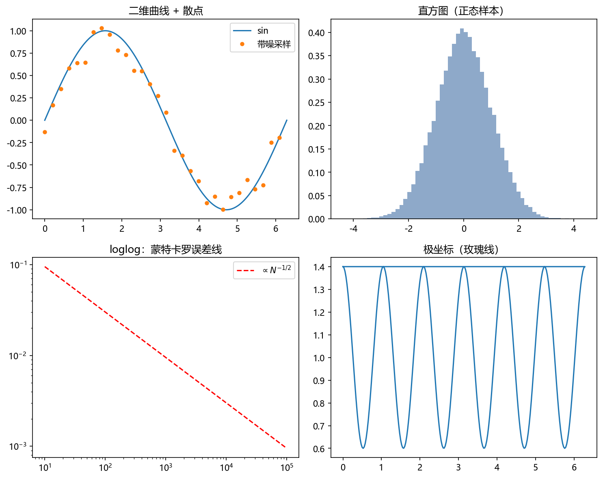
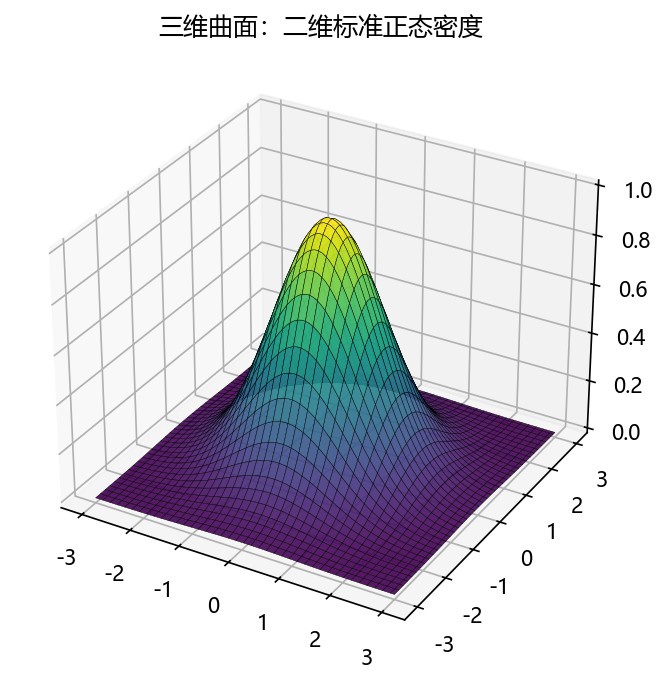

第 3 章 善用身边的数学秘书：从 Matlab 到 Python#
本章解决：教材本章教 Matlab（3.1 快速入门、3.2 线性代数、3.3 作图、3.4 程序设计、3.5 符号演算），本笔记全程改用 Python + NumPy + Matplotlib + SymPy——这章做"翻译"：给全对照表、点名易踩的坑，并把蒙特卡罗的编程惯例（随机数对象、种子、向量化）一次立好。 承上启下：向量化习惯从本章养成——蒙特卡罗动辄百万条 history，本章实测循环比向量化慢约 90 倍；第 4 章将拆开
default_rng看均匀随机数是怎么造出来的。
| 关键词 | 事实 |
|---|---|
| 环境 | Anaconda（Python 3.12）+ Jupyter Notebook，numpy / matplotlib / sympy |
| 心法 | 向量化：把"对每个样本做循环"改写成"对整个数组一次算" |
| 最大坑 | NumPy 索引从 0 开始；* 是逐元素乘，矩阵乘用 @ |
| 随机数入口 | np.random.default_rng(seed) 返回 Generator 对象 |
本章代码：nb/ch03.ipynb（工具演示，种子 2026）。
3.1 环境与 Notebook 工作流#
Anaconda 装好后，"数学秘书"就位。教材的"交互式使用"对应两种形态：
- 交互式：Jupyter Notebook / IPython。代码写在**单元（cell）**里，
Shift+Enter运行并跳到下一格；图表自动内嵌；内核（kernel）记着所有已定义的变量，改了代码记得从头重跑（Kernel → Restart & Run All），保证结果可复现。 - 脚本：
import的.py模块（对应 Matlab 的 M 文件）——适合封装反复用的函数。
Notebook 对随机模拟尤其合适：它天然是一份"试验记录本"——代码、参数、结果、图按顺序留在同一页，复现只需重跑一遍。本章演示中的耗时用 IPython 魔法命令 %timeit 测量。
3.⅓.4 变量、数组与向量化#
对照表（Matlab → NumPy）#
| 任务 | Matlab | Python / NumPy |
|---|---|---|
| 等差序列 | 1:2:9 |
np.arange(1, 9, 2)（含头不含尾） |
| 均匀网格 | linspace(0,1,11) |
np.linspace(0, 1, 11) |
| 元素平方 | A.^2 |
A**2 |
| 矩阵乘法 | A*B |
A @ B（* 是逐元素乘！） |
| 转置 | A' |
A.T |
| 拼接 | [A B] / [A; B] |
np.hstack / np.vstack |
| 取元素 | A(1,2)（从 1 数起） |
A[0, 1]（从 0 数起） |
| 逻辑索引 | A(A>0) |
A[A > 0] |
| 按列求均值 | mean(A, 1) |
A.mean(axis=0) |
| 解 \(A\mathbf x=\mathbf b\) | A\b |
np.linalg.solve(A, b) |
| 特征值 | eig(A) |
np.linalg.eig(A) |
| 帮助 | help plot |
help(plt.plot) 或 plt.plot? |
axis 的记忆法：axis 指被压缩掉的那根轴——A.mean(axis=0) 压掉行号，得到每列的均值，正对应 Matlab 的 mean(A,1)。
三个最常咬人的坑#
a = np.arange(5)
b = a # 坑1：b 是同一个数组的别名，不是拷贝（Matlab 是值拷贝）
c = a[:2] # 坑2：切片是视图，改 c 会动 a；要独立用 a[:2].copy()
A @ A # 坑3：矩阵乘用 @；A*A 是逐元素平方（对应 Matlab 的 A.*A）
向量化：蒙特卡罗的第一生产力#
同一个平均值法估计 \(\int_0^1 e^{-x^2}\mathrm dx\)，两种写法：
def mean_loop(N): # 逐条 history 循环
s = 0.0
for _ in range(N):
s += np.exp(-rng.random()**2)
return s / N
def mean_vec(N): # 整个数组一次算
return np.exp(-rng.random(N)**2).mean()
两种写法答案一致（0.747 附近），耗时差近两个数量级。原因：循环每次都让 Python 解释器做一次完整调度，向量化把循环下沉到 C/Fortran 级的连续内存运算。蒙特卡罗代码的默认姿势：先想"这个试验能不能写成数组运算"，写不了再用循环。
3.2 线性代数#
A = np.diag(2*np.ones(4)) + np.diag(-np.ones(3), 1) + np.diag(-np.ones(3), -1)
b = np.array([1., 0., 0., 1.])
x = np.linalg.solve(A, b) # 解 Ax=b：专用分解，不要用 inv(A)@b
w, V = np.linalg.eigh(A) # 对称矩阵用 eigh（更快更稳）
# 特征值: 0.382, 1.382, 2.618, 3.618 —— 恰为 2-2cos(kπ/5)，黄金分割数现身
数值线性代数只取所需：解方程用 solve，最小二乘用 lstsq，对称特征问题用 eigh。蒙特卡罗用线性代数的地方不多但关键（第 6 章马尔可夫链的转移矩阵、平稳分布；第 8 章的权重矩阵）。
3.3 作图#
Matplotlib 的心智模型：fig（画布）+ axes（子图坐标系），数据进、图出。模拟中最常用四件套：plot（曲线/轨迹）、scatter（散点）、hist（分布）、loglog/semilogx（收敛与误差）。


3.5 符号演算#
教材用 Matlab 的符号工具箱做微积分与解方程；Python 生态里这是 SymPy。它在本笔记里的角色是验算器——前面手推的公式，丢给符号引擎复核一遍：
import sympy as sp
th, L, D, u = sp.symbols("theta L D u", positive=True)
sp.integrate(L*sp.sin(th)/D * 1/sp.pi, (th, 0, sp.pi)) # 蒲丰积分 → 2*L/(pi*D) ✓
sp.diff(sp.sqrt(u), u) # F_Y(y)=√y 求导 → 1/(2*sqrt(u)) ✓
sp.integrate(1/(2*sp.sqrt(u)), (u, 0, 1)) # 密度归一化 → 1 ✓
sp.solve(sp.Eq(x**2 + x - 6, 0), x) # 解方程 → [-3, 2]
四条输出与 1.4 节的 \(P_{cut}=\frac{2L}{\pi D}\)、2.5 节的 \(f_Y(y)=\frac{1}{2\sqrt y}\) 完全一致。手推 + 符号验算 + 模拟验证三重对照，是这个笔记所有推导的标准配置。
随机模拟常用函数速查（NumPy Generator）#
| 抽什么 | 调用 | 备注 |
|---|---|---|
| 均匀 \(U(0,1)\) | rng.random(n) |
一切分布的原料 |
| 整数 | rng.integers(low, high, size) |
掷骰子：rng.integers(1, 7) |
| 正态 | rng.normal(mu, sigma, size) |
|
| 指数 | rng.exponential(scale, size) |
scale = 均值 |
| 序列抽样 | rng.choice(a, size, p=) |
可带权重 \(p\) |
| 洗牌 | rng.permutation(x) |
模拟洗牌 |
Generator 是"随机数流"对象：同一个 rng 顺序取数，同一种子完整重跑必得同样结果——本笔记每个 notebook 都遵守"开头定种子、全章一个流"的约定，所以页面里引用的每个数字都能复现。
下一章拆开 default_rng：这些"均匀随机数"其实是确定性算法算出来的——伪随机数。它凭什么能当随机用？怎么判断它够不够随机？掷骰子的机器，要经得起检验。